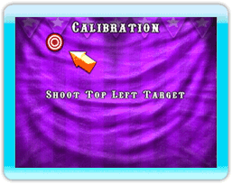
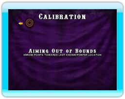

Le jeu est précalibré à un niveau par défaut pour assurer une interaction optimale avec la manette Wii Remote. Toutefois, il est possible de calibrer de nouveau le jeu si le calibrage n’est pas satisfaisant. Il est important de se tenir à une distance de 2 à 3 mètres (8 à 10 pieds) de l’écran lorsque vous calibrez la manette Wii Remote.
- Pointez la manette Wii Remote vers la cible qui apparaît dans le coin supérieur gauche de l’écran et tirez.
- Pointez la manette Wii Remote vers la cible qui apparaît dans le coin inférieur droit de l’écran et tirez.
- Si vous êtes satisfait de la réaction du curseur à l’écran au mouvement de la manette Wii Remote, tirez sur Accept (accepter). Si vous n’êtes pas satisfait, tirez sur Try Again (essayer de nouveau). Appuyez sur pour restaurer le calibrage par défaut.
Remarque:

Il n’y a aucun curseur qui apparaît à l’écran durant le calibrage. Si vous visez trop à l’extérieur de la zone de calibrage, la manette Wii vibrera et l’écran affichera un message « Aiming Out of Bounds » (mire hors limite) avec une flèche près de la cible qui indique la dernière position de tir.
Si cela se produit, immobilisez la manette Wii Remote à l’emplacement de la cible et tenez-la jusqu’à ce que la cible réapparaisse. N’oubliez pas que la façon de tenir la manette Wii Remote lorsque vous calibrez aura un impact sur le calibrage final. Tenez la manette Wii Remote dans une position de tir qui vous semble naturelle et que vous emprunterez durant la partie.